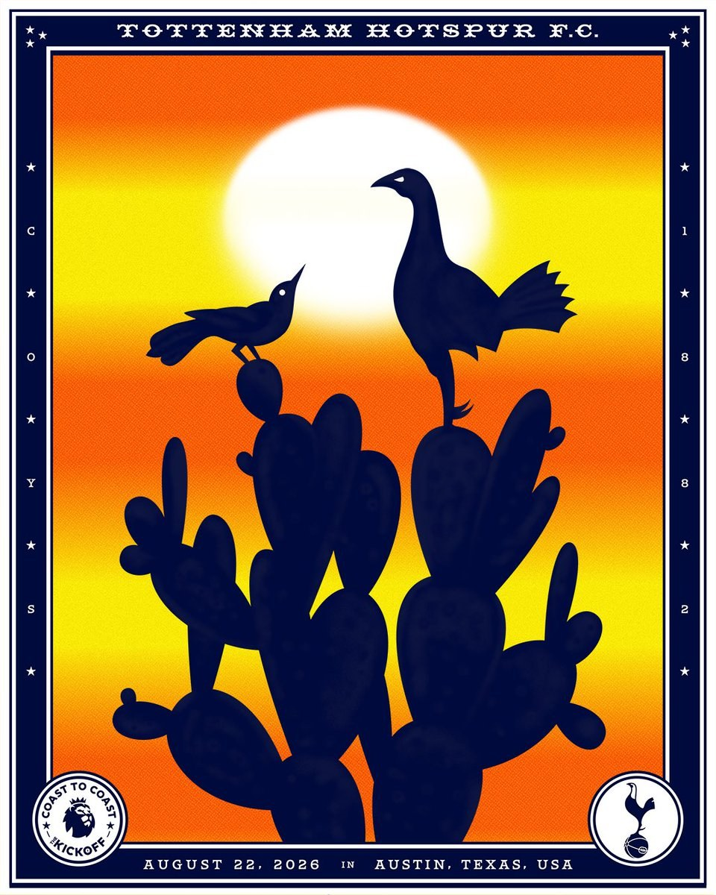

Arrive Early
An 11:30 kickoff with league promotion behind it will draw a crowd. Tramps is opening early, and we'd get there as early as you can to be sure of getting in.
The Premier League opens the 2026/27 season with a supporter event for Tottenham Hotspur here in Austin. Mister Tramps is the host venue. Entry is free, and the season opener is on every screen.

Follow the link above to register with the Premier League.
The Coast to Coast Kick Off is the Premier League's opening-weekend celebration in the United States, supported by NBC, Peacock and USA Network. Twenty supporter events run across twenty American cities from Friday 21 through Monday 24 August, one for every club in the league.
Tottenham Hotspur is hosting theirs in Austin. The match is the season opener away at Brentford, kicking off at 11:30 in the morning Central time, screened live at Mister Tramps on Research Boulevard with the league's own matchday setup alongside it.
Registration is required, and you can sign up at the door. But that's one more queue on a morning that will already have enough, so take the two minutes now. Doors time and final admission details are still being confirmed, and we'll post anything further here as soon as it's official.
Before kickoff
An 11:30 kickoff with league promotion behind it will draw a crowd. Tramps is opening early, and we'd get there as early as you can to be sure of getting in.
We're bringing the home of the Lilywhites to Austin for the day. Wear white and you're in the raffle.
Free entry, a big screen and a season opener is the easiest introduction to this club that anyone is ever going to get.
Directions, parking, and what the room is like on a normal matchday.